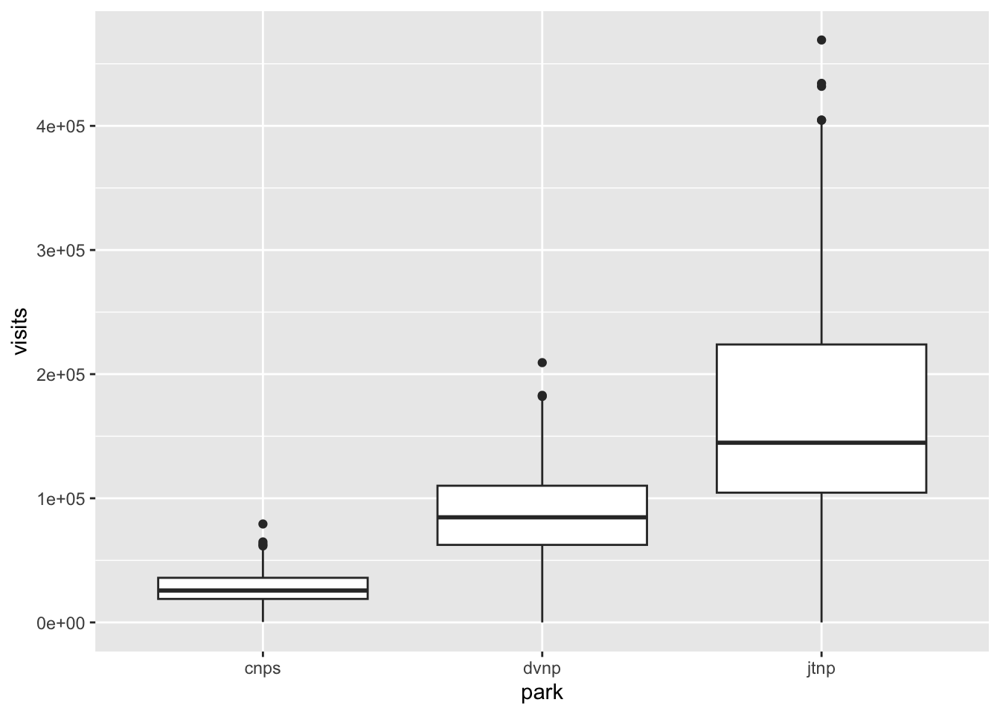
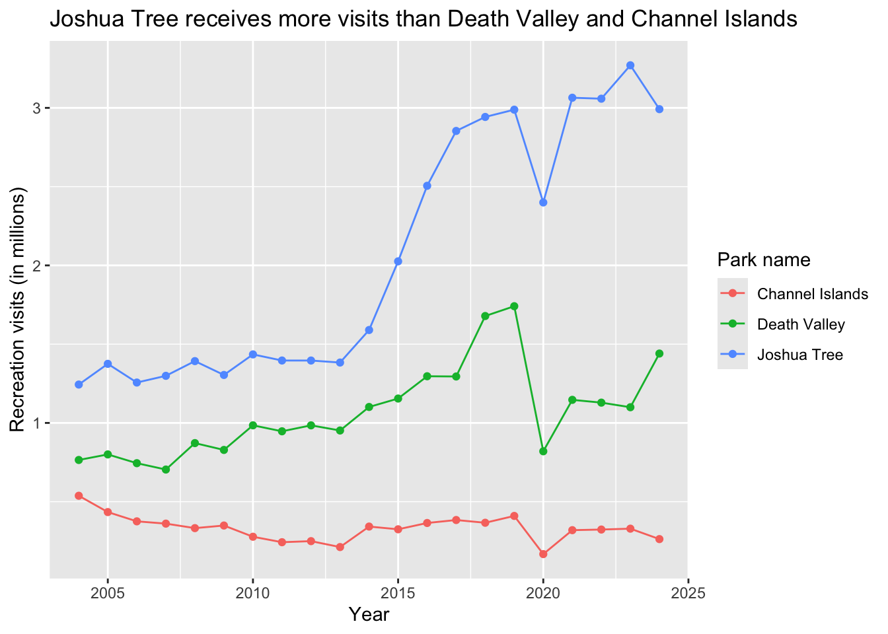

(5+7)*2 # basic math: adding and multiplying[1] 24basics of using RStudio, intro to tidyverse
March 29, 2025
Workshop dates: April 3 (Thursday), April 4 (Friday):
tidyversemean() and median()read_csv()filter()group_by()mutate()summarize()|>ggplot()geom_boxplot()geom_point() and geom_line()labs()This workshop’s data comes from National Parks Service Stats, which is the official repository for all data relating to national parks visits. Today, we are working with data from Channel Islands (unceded Chumash land), Death Valley (unceded Serrano and Cahuilla land), and Joshua Tree (unceded Shoshone, Kawaiisu, and Southern Paiute land). You can orient yourself on this map.
In class, we use an R Script. It allows you to write your code (recipe) and run the code in the console (kitchen).
R considers everything in the script as code to run. Try writing code to calculate the sum of 5 and 7 multiplied by 2.
Run code by putting your cursor on the line and hitting Ctrl + Enter or Cmd + Enter.
Everything in colored text is considered code, and that is what R will run in the console. If you don’t want to run code, you can put a pound sign/hashtag at the beginning of the line. This is especially useful when you want to explain what your code is doing at each line in plain language.
Go back up to the code you wrote to do the simple calculation and write a comment describing what the code is doing.
It’s often useful to save things called “objects.” These are stored numbers, lists of numbers, or anything else that appears in the “Environment” tab in the top right.
To save (aka store) an object, the general form is:
object name <- what you want to store
Read aloud, this is “object name, left arrow operator, what you want to store”.
In this code, we are creating an object called visitors and storing a list of numbers: 31, 15, 20, 50.
In code, you know that something is a list if it is within a c() function (we’ll get to functions in the next section).
Write a comment at the end of this line describing what it does.
R allows you to apply functions to do calculations, from simple to complex structures.
Let’s say we want to find the mean of the numbers in visits. We could do the calculation by hand, or we could as R to do it for us.
Functions are really powerful tools in R. In this class, we’ll get comfortable learning new functions and applying them to different scenarios.
In this next line, we’ll calculate the mean of the numbers in visits using the function mean().
All functions take the general form function(). Read aloud, this is “function, parentheses”.
Write a comment at the end of the line so that you know what it is doing!
There is also a function for calculating the median, another measure of central tendency we talked about in class. You can probably guess what it is called!
Packages are collections of functions that you can bring into R to use. You’ve already installed a package (using the install.packages() function) if you did the set up steps!
Today (and most days), we’ll use the tidyverse package. The tidyverse is actually a package of packages, and they all have functions that are really useful for us to use in working with data and analyzing it.
In this next line, we’ll “read in the package” using the function library(). You only have to install a package once, but you have to read in a package every time you start a new script or restart R.
To work with data, we can also “read it in” the way we would a package. Basically, we are getting the data into R for us to work with. The function we’ll use for that is read_csv(), which is from the tidyverse package.
We’ve already looked at the data in Excel, but let’s make sure it’s actually in R.
First, if you look at the “Environment” tab, you should see an object called park_visits.
If you’re not sure if your data is in R, the first thing to check is the “Environment”. If you’ve read in everything correctly, you should see an object in there. If not, you know something is wrong!
Second, you can use the View() function to look at the actual data.
Let’s say we want to figure out what the average (mean) number of visits is for Joshua Tree is across all years and months.
First, you can filter by park to only include jtnp (or Joshua Tree) using the filter() function.
Then, you can calculate the total visits for Joshua Tree across all years using the summarize() and sum() functions.
This can get tedious if you have a bunch of filtering and summarizing to do! So instead, we can use…
You can use what’s called a pipe operator to chain functions together. The keyboard shortcut for a pipe is Ctrl + Shift + M or Cmd + Shift + M.
If you did the set up steps, you should see a pipe operator that looks like this: |>.
If you don’t, you might see a pipe operator that looks like this: %>%.
These both do the same thing, though the |> is from baseR (or, a package of pre-loaded R functions and operators) and the %>% is from the magrittr package in the tidyverse.
When reading your code aloud, you can read the pipe as “and then”
Let’s say we want to visualize the average monthly visits for Channel Islands, Joshua Tree, and Death Valley. We can use a boxplot to do that. Remember that a boxplot is an easy way to represent the central tendency (using the median) and spread (using quantiles) of a variable.
Before you move on, write your best guess for which park has, on average, the greatest number of visitors (out of these three).
To visualize the data, we’ll use ggplot() and its associated functions, which are all in the ggplot2 package in the tidyverse.
The main parts of creating a plot in ggplot() are:
1. the “global call”: you have to tell R that you want to use ggplot() by actually naming the function
2. the “aesthetics”: you have the tell R the data frame name (in this case, parks_visits) and what the x- and y-axes should be (using the aesthetics function called aes())
3. the “geometries”: this is the type of plot you are making. In this case, we’re using the function geom_boxplot() because we want to make a boxplot. Most geom_() functions are named after the plot they make.
# 1. start with the global call
ggplot(data = parks_visits, # using the data frame parks_visits
aes(x = park, # 2. naming the aesthetics: the x-axis should be the 3 parks
y = visits)) + # the y-axis should be monthly visits
geom_boxplot() # 3. the plot should be a boxplot
When you run the code to create this figure, you will get a warning message that looks like this: Warning message: Removed 1 row containing non-finite outside the scale range (stat_boxplot()).
This means that there is a number missing in the data frame. Can you find it? (Hint: you’ll need to look at CNPS visit numbers from 2005).
Missing data is often not a big deal - things happen during data collection! However, we do want to be aware of missing data when we analyze it. That’s why making visualizations is so important; it can help us identify gaps in the dataset if there are any.
Which park do you think receives, on average, the greatest number of visitors?
We can check that using math!
group_by()In the parks_visits data frame, there are 3 parks. We could do everything in section 5 for each park individually, or we could use a function called group_by() from the tidyverse. When you use group_by(), you are basically telling R, “there are groups in this dataset that I want you to pay attention to.”
parks_summary <- parks_visits |> # start with the parks_visits data frame
group_by(park) |> # group by each park
summarize(median_visits = median(visits, na.rm = TRUE)) # summarize the median number of visits
parks_summary # display the final data frame# A tibble: 3 × 2
park median_visits
<chr> <dbl>
1 cnps 25698
2 dvnp 84672.
3 jtnp 144762.Let’s say we want to create a figure of total annual visits through time. That would mean we would need to add up all the monthly visits for a given park in a given year. We can take advantage of the functions we’ve gone through to do that work!
We’ll also add in a new function here: mutate(). mutate() is a function that allows you to add new columns or manipulate existing columns in a data frame. In this case, we’ll use mutate to do two things:
1. add a new column called park_name that has the full name of each park (instead of the abbreviation)
2. add a new column called visits_millions that calculates the annual number of visits in millions
annual_visits <- parks_visits |> # start with the parks_visits data frame
group_by(park, year) |> # group by park AND year
summarize(total_visits = sum(visits, na.rm = TRUE)) |> # calculate total visits per year
mutate(park_name = case_when( # create a new column called park_name
park == "cnps" ~ "Channel Islands", # when cnps appears in the park column, fill in Channel Islands
park == "dvnp" ~ "Death Valley", # when dvnp appears in the park column, fill in Death Valley
park == "jtnp" ~ "Joshua Tree" # when jtnp appears in the park column, fill in Joshua Tree
)) |>
mutate(visits_millions = total_visits/1000000) # add a new column called visits_millions, where the total visits are divided by 1000000Now, we can visualize the data in a line plot, which is a type of scatter plot except the points are connected with lines. We can do that using ggplot() again, but this time with two new “geometries”: geom_point() and geom_line().
We’ll also add some color to the plot to make it more interesting to look at!
Lastly, we’ll add in a new function called labs(), which allows us to change the labels on the axes and legend and add a title to the plot, to make things more clear.
ggplot(data = annual_visits, # use the annual_visits data frame
aes(x = year, # the x-axis should be year
y = visits_millions, # the y-axis should be visits in millions
color = park_name)) + # color all geometries by park_name
geom_point() + # adding points
geom_line() + # adding lines
labs(x = "Year", # relabelling the x-axis
y = "Recreation visits (in millions)", # and the y-axis
title = "Joshua Tree receives more visits than Death Valley and Channel Islands", # adding a title
color = "Park name") # relabelling the legend
END OF WORKSHOP 1
---
title: "Coding workshop: Week 1"
subtitle: "basics of using RStudio, intro to `tidyverse`"
categories: [tidyverse, mean, median, read_csv, filter, group_by, mutate, summarize, pipe operators, '|>', ggplot, geom_boxplot, geom_point, geom_line, labs]
---
**Workshop dates: April 3 (Thursday), April 4 (Friday)**:
## 1. Summary
### Packages
- `tidyverse`
### Operations
- calculations using `mean()` and `median()`
- read in data using `read_csv()`
- filter data using `filter()`
- group data using `group_by()`
- create new column using `mutate()`
- calculate summary statistics using `summarize()`
- chain functions together using ` |> `
- visualize data using `ggplot()`
- create boxplots using `geom_boxplot()`
- create line plots (a type of scatterplot) using `geom_point()` and `geom_line()`
- label plots using `labs()`
### Data source
This workshop's data comes from [National Parks Service Stats](https://irma.nps.gov/Stats/), which is the official repository for all data relating to national parks visits. Today, we are working with data from Channel Islands (unceded Chumash land), Death Valley (unceded Serrano and Cahuilla land), and Joshua Tree (unceded Shoshone, Kawaiisu, and Southern Paiute land). You can orient yourself on [this map](https://www.arcgis.com/apps/webappviewer/index.html?id=f178c6d7581e4d45ad7ce68c52a1863e&extent=-13593425.3853%2C4085629.1882%2C-13117987.0693%2C4385568.0871%2C102100).
## 2. Code
### 1. Intro to scripts
In class, we use an R Script. It allows you to write your code (recipe) and run the code in the console (kitchen).
R considers everything in the script as code to run. Try writing code to calculate the sum of 5 and 7 multiplied by 2.
Run code by putting your cursor on the line and hitting `Ctrl + Enter` or `Cmd + Enter`.
```{r math-code}
(5+7)*2 # basic math: adding and multiplying
```
Everything in colored text is considered code, and that is what R will run in the console. If you don't want to run code, you can put a pound sign/hashtag at the beginning of the line. This is especially useful when you want to explain what your code is doing at each line in plain language.
Go back up to the code you wrote to do the simple calculation and write a comment describing what the code is doing.
### 2. Intro to objects
It's often useful to save things called "objects." These are stored numbers, lists of numbers, or anything else that appears in the "Environment" tab in the top right.
To save (aka store) an object, the general form is:
`object name <- what you want to store`
Read aloud, this is "object name, left arrow operator, what you want to store".
In this code, we are creating an object called `visitors` and storing a list of numbers: 31, 15, 20, 50.
In code, you know that something is a list if it is within a `c()` function (we'll get to functions in the next section).
Write a comment at the end of this line describing what it does.
```{r storing-object}
visits <- c(31, 15, 20, 50) # saving a list of numbers as an object called visits
```
### 3. Intro to functions
R allows you to apply functions to do calculations, from simple to complex structures.
Let's say we want to find the mean of the numbers in `visits`. We could do the calculation by hand, or we could as R to do it for us.
Functions are really powerful tools in R. In this class, we'll get comfortable learning new functions and applying them to different scenarios.
In this next line, we'll calculate the mean of the numbers in `visits` using the function `mean()`.
All functions take the general form `function()`. Read aloud, this is "function, parentheses".
```{r mean-calc}
mean(visits) # calculating mean of numbers in visits
```
Write a comment at the end of the line so that you know what it is doing!
There is also a function for calculating the median, another measure of central tendency we talked about in class. You can probably guess what it is called!
```{r median-calc}
median(visits)
```
### 4. Intro to packages and data
Packages are collections of functions that you can bring into R to use. You've already installed a package (using the `install.packages()` function) if you did the set up steps!
Today (and most days), we'll use the `tidyverse` package. The `tidyverse` is actually a package of packages, and they all have functions that are really useful for us to use in working with data and analyzing it.
In this next line, we'll "read in the package" using the function `library()`. You only have to install a package once, but you have to read in a package every time you start a new script or restart R.
```{r load-in-package}
library(tidyverse)
```
To work with data, we can also "read it in" the way we would a package. Basically, we are getting the data into R for us to work with. The function we'll use for that is `read_csv()`, which is from the `tidyverse` package.
```{r quarto-data}
#| echo: false
parks_visits <- read_csv(here::here("workshop", "data", "parks_visits.csv"))
```
```{r script-data}
#| eval: false
parks_visits <- read_csv("parks_visits.csv")
```
We've already looked at the data in Excel, but let's make sure it's actually in R.
First, if you look at the "Environment" tab, you should see an object called `park_visits`.
:::{.callout-tip title="Is my data actually in R?" collapse="true"}
If you're not sure if your data is in R, the first thing to check is the "Environment". If you've read in everything correctly, you should see an object in there. If not, you know something is wrong!
:::
Second, you can use the `View()` function to look at the actual data.
```{r viewing-data}
#| eval: false
View(parks_visits)
```
### 5. cleaning and wranging
Let's say we want to figure out what the average (mean) number of visits is for Joshua Tree is across all years and months.
First, you can filter by park to only include `jtnp` (or Joshua Tree) using the `filter()` function.
```{r filter-state}
df1 <- filter(parks_visits, # use the parks_visits data frame
park == "jtnp") # only include rows where `jtnp` is in the `park` column
```
Then, you can calculate the total visits for Joshua Tree across all years using the `summarize()` and `sum()` functions.
```{r}
df2 <- summarize(df1, # use the df1 data frame
mean_visits = mean(visits)) # calculate the mean number of visits
```
This can get tedious if you have a bunch of filtering and summarizing to do! So instead, we can use...
### 6. an easier way to clean and wrangle
You can use what's called a pipe operator to chain functions together. The keyboard shortcut for a pipe is `Ctrl + Shift + M` or `Cmd + Shift + M`.
:::{.callout-tip title="Which pipe to use?" collapse="true"}
If you did the set up steps, you should see a pipe operator that looks like this: ` |> `.
If you don't, you might see a pipe operator that looks like this: ` %>% `.
These both do the same thing, though the ` |> ` is from `baseR` (or, a package of pre-loaded R functions and operators) and the ` %>% ` is from the `magrittr` package in the `tidyverse`.
:::
When reading your code aloud, you can read the pipe as "and then"
```{r jt-example}
# create a new object called `jtnp`
jtnp <- parks_visits |> # start with the `parks_visits` data frame
filter(park == "jtnp") |> # filter to only include Joshua tree
summarize(mean_visits = mean(visits)) # calculate the mean number of visits at Joshua Tree
```
### 7. Visualizing data
Let's say we want to visualize the average monthly visits for Channel Islands, Joshua Tree, and Death Valley. We can use a boxplot to do that. Remember that a boxplot is an easy way to represent the **central tendency** (using the median) and **spread** (using quantiles) of a variable.
Before you move on, write your best guess for which park has, on average, the greatest number of visitors (out of these three).
To visualize the data, we'll use `ggplot()` and its associated functions, which are all in the `ggplot2` package in the `tidyverse`.
The main parts of creating a plot in `ggplot()` are:
1. the "global call": you have to tell R that you want to use `ggplot()` by actually naming the function
2. the "aesthetics": you have the tell R the data frame name (in this case, `parks_visits`) and what the x- and y-axes should be (using the aesthetics function called `aes()`)
3. the "geometries": this is the _type_ of plot you are making. In this case, we're using the function `geom_boxplot()` because we want to make a boxplot. Most `geom_()` functions are named after the plot they make.
```{r first-boxplot}
#| warning: false
# 1. start with the global call
ggplot(data = parks_visits, # using the data frame parks_visits
aes(x = park, # 2. naming the aesthetics: the x-axis should be the 3 parks
y = visits)) + # the y-axis should be monthly visits
geom_boxplot() # 3. the plot should be a boxplot
```
:::{.callout-tip title="Getting a warning?"}
When you run the code to create this figure, you will get a warning message that looks like this:
`
Warning message:
Removed 1 row containing non-finite outside the scale range (`stat_boxplot()`).
`
This means that there is a number _missing_ in the data frame. Can you find it? (Hint: you'll need to look at CNPS visit numbers from 2005).
Missing data is often not a big deal - things happen during data collection! However, we do want to be aware of missing data when we analyze it. That's why making visualizations is so important; it can help us identify gaps in the dataset if there are any.
:::
Which park do you think receives, _on average_, the greatest number of visitors?
We can check that using math!
### 8. Grouping data using `group_by()`
In the `parks_visits` data frame, there are 3 parks. We could do everything in section 5 for each park individually, or we could use a function called `group_by()` from the `tidyverse`. When you use `group_by()`, you are basically telling R, "there are groups in this dataset that I want you to pay attention to."
```{r first-group-example}
parks_summary <- parks_visits |> # start with the parks_visits data frame
group_by(park) |> # group by each park
summarize(median_visits = median(visits, na.rm = TRUE)) # summarize the median number of visits
parks_summary # display the final data frame
```
### 9. Cleaning, wrangling, and visualizing all together
Let's say we want to create a figure of total _annual_ visits through time. That would mean we would need to add up all the monthly visits for a given park in a given year. We can take advantage of the functions we've gone through to do that work!
We'll also add in a new function here: `mutate()`. `mutate()` is a function that allows you to add new columns or manipulate existing columns in a data frame. In this case, we'll use mutate to do two things:
1. add a new column called `park_name` that has the full name of each park (instead of the abbreviation)
2. add a new column called `visits_millions` that calculates the annual number of visits in millions
```{r annual-visits-summary}
annual_visits <- parks_visits |> # start with the parks_visits data frame
group_by(park, year) |> # group by park AND year
summarize(total_visits = sum(visits, na.rm = TRUE)) |> # calculate total visits per year
mutate(park_name = case_when( # create a new column called park_name
park == "cnps" ~ "Channel Islands", # when cnps appears in the park column, fill in Channel Islands
park == "dvnp" ~ "Death Valley", # when dvnp appears in the park column, fill in Death Valley
park == "jtnp" ~ "Joshua Tree" # when jtnp appears in the park column, fill in Joshua Tree
)) |>
mutate(visits_millions = total_visits/1000000) # add a new column called visits_millions, where the total visits are divided by 1000000
```
Now, we can visualize the data in a _line plot_, which is a type of scatter plot except the points are connected with lines. We can do that using `ggplot()` again, but this time with two new "geometries": `geom_point()` and `geom_line()`.
We'll also add some color to the plot to make it more interesting to look at!
Lastly, we'll add in a new function called `labs()`, which allows us to change the labels on the axes and legend and add a title to the plot, to make things more clear.
```{r annual-visits-plot}
ggplot(data = annual_visits, # use the annual_visits data frame
aes(x = year, # the x-axis should be year
y = visits_millions, # the y-axis should be visits in millions
color = park_name)) + # color all geometries by park_name
geom_point() + # adding points
geom_line() + # adding lines
labs(x = "Year", # relabelling the x-axis
y = "Recreation visits (in millions)", # and the y-axis
title = "Joshua Tree receives more visits than Death Valley and Channel Islands", # adding a title
color = "Park name") # relabelling the legend
```
**END OF WORKSHOP 1**